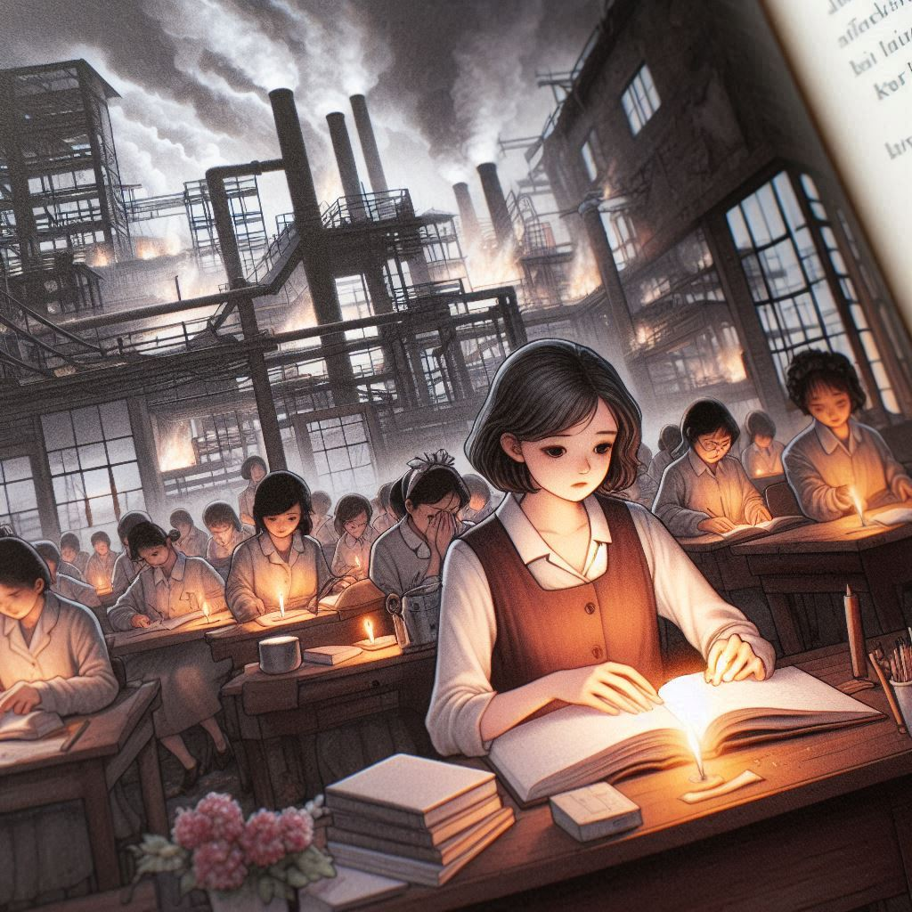

어쩌자고 우린 열일곱
목차
작가
이옥수
출판일
2010년
감상평에 대한 AI그림
세 열입곱 소녀가 서울로 상경하여 낮에는 일을하고 밤에는 공부를 하며 지낼 곳을 마련하고 공장 직원과의 다투는 등의 모습에서 당시 시대적 상황이 잘 느껴져서 좋았다.
순지가 상경을 하기 전 은영과 정애의 서울 이야기를 듣고 서울에 대한 꿈을 키워나가는 장면과, 공장 화재로 친구들을 잃고 고향에 내려와 추억을 떠올리는 장면의 대비와 친구를 잃은 고통에 대한 서술이 인상깊었다.
책을 읽고 난 후 실제 공장 화재 사고에서 모티브를 얻었다는 것을 알게 되었을 때 사건의 슬픔이 더욱 깊게 남았다.

감상평에 대한 AI 감정 평가
사용자의 감상평에서 나타난 감정과 태도는 다음과 같습니다.
✨ 감탄: 소녀들이 서울로 상경하여 꿈을 이루어가는 과정과 당시 시대적 배경을 잘 반영한 소설의 전개 방식에 대한 높은 평가가 드러납니다.
✨ 슬픔: 공장 화재 사고로 친구들을 잃는 장면에서 느껴지는 깊은 슬픔과 그로 인한 고통이 잘 표현되어 있습니다.
✨ 진지함: 실화에서 모티브를 얻은 사건의 비극성과 그로 인한 감정적 여파를 진지하게 받아들이는 태도가 나타납니다.
✨ 공감: 소녀들이 겪는 어려움과 고통에 공감하며, 그들이 처한 상황에 대해 깊이 이해하고 있습니다.